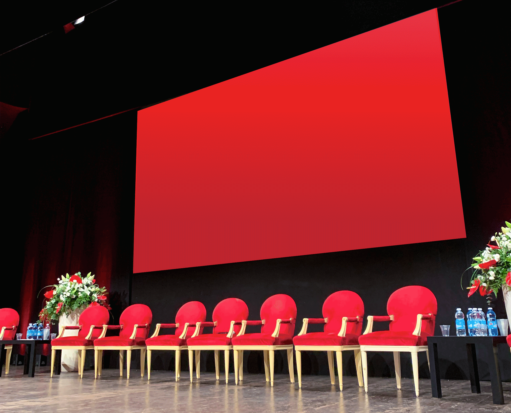

TEATRO MANZONI 26/27
/ VISUAL IDENTITY & CAMPAIGN DESIGN
/ AGENCY WORK @45gradi
/ CLIENT: TEATRO MANZONI
/ 2026
Campaign design for Teatro Manzoni’s 2026–2027 theatrical season, built around the iconic phrase “Ci vediamo al Manzoni”.
Through the use of bold typography, the type itself becomes a curtain - the quintessential symbol of theatre - bringing dynamism and visual impact to the Teatro Manzoni’s identity.
Designed to adapt to different formats, the curtain becomes a flexible graphic device that frames and reveals the protagonists of the season. Each application creates a new stage, where typography, imagery and content come together.
Where the use of typography would result in a heavier composition, the curtain is simplified into simple, flat graphic forms: in this way, the basic concept remains intact, while becoming lighter and more effective at different scales.
The visual system is organised around four colour variations, each corresponding to one of the season’s four programme categories, creating a clear visual distinction between the different strands of the theatre’s program.


